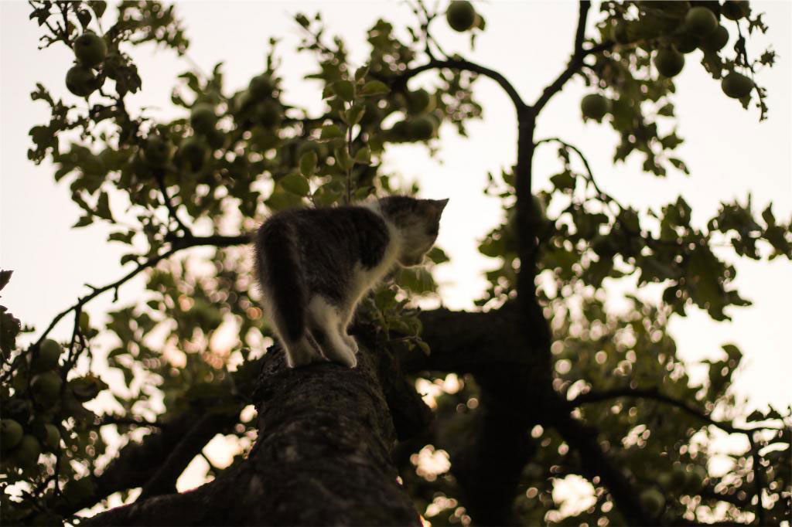
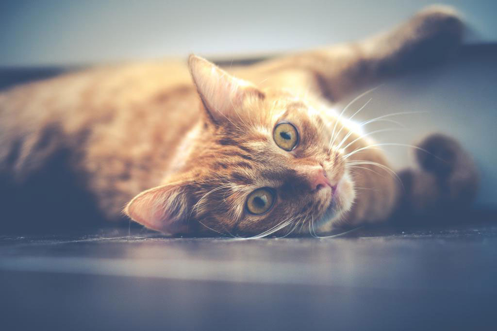
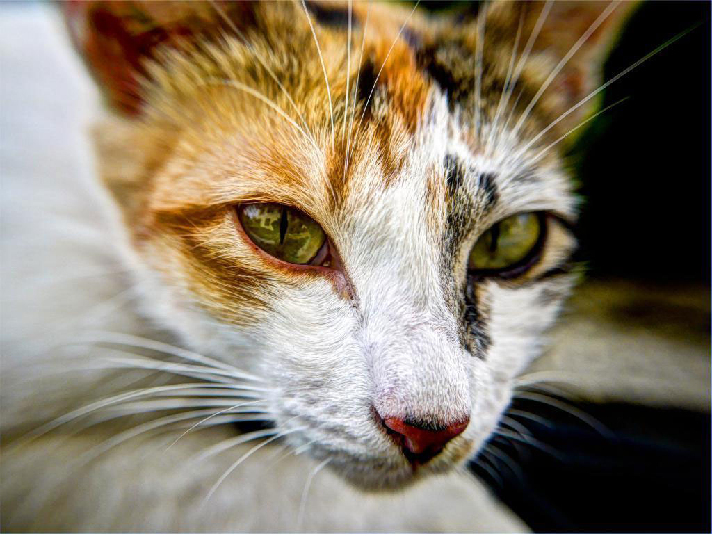

About Cat Rescue Network
Based in Ottawa, Ontario, Cat Rescue Network (CRN) is a non-profit, volunteer driven organization established in 1999 that is committed to rescuing abandoned and feral cats overlooked by the city’s animal welfare services. As we do not have a facility, all of the cats we rescue live with volunteers in thier homes (foster families) until they are adopted. Due to our lack of "overhead", we are able to put all donations towards the medical bills of our rescues.
Louise Hindle, the founder of Cat Rescue Network (see right) has been involved in animal rescue for over 20 years. Its primary goal was and is to give neglected animals a second chance at finding a loving home. Louise also wanted to bring animal rescues together to help one another by sharing resources - this precipitated the name Cat Rescue "Network". We often work with start-up animal rescues to promote ethical rescues and ensure they have the tools and information necessary to begin humanly helping the animal population.
There are hundreds of homeless kittens and cats in our region. Human apathy and neglect have forced them to forage for survival. They congregate in parks, wooded areas, and alleyways; anywhere they can find food and shelter. Left to fend for themselves, their lives are a constant struggle against the cold, disease, accidents and predators. A common misunderstanding when someone sees a cat on the street is that they are wild and undomesticated. In fact, many of these cats are lost or abandoned - friendly domesticated animals who desperately need someone to stop and help them.
